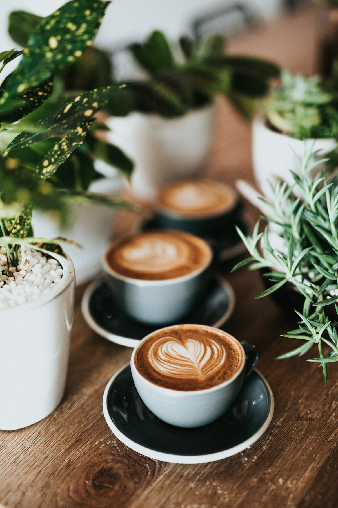

ABOUT
一杯のこと

焙煎したての短さを、
そのまま出す。
焙煎したての豆がいちばん美味しいのは、思っているよりずっと短いあいだです。 だからここでは、週に二度、そのぶんだけを焼いています。
おやつは毎朝、店の奥で焼いています。大きな仕掛けはありません。 コーヒーに合う甘さを、その日の気温を見ながら決めているだけです。
お一人でも、長居していただいて構いません。 そのためのカウンター席と、静かな時間を用意しています。
週2回焙煎 ・ 豆の量り売り 100g〜 ・ 水曜おやすみ